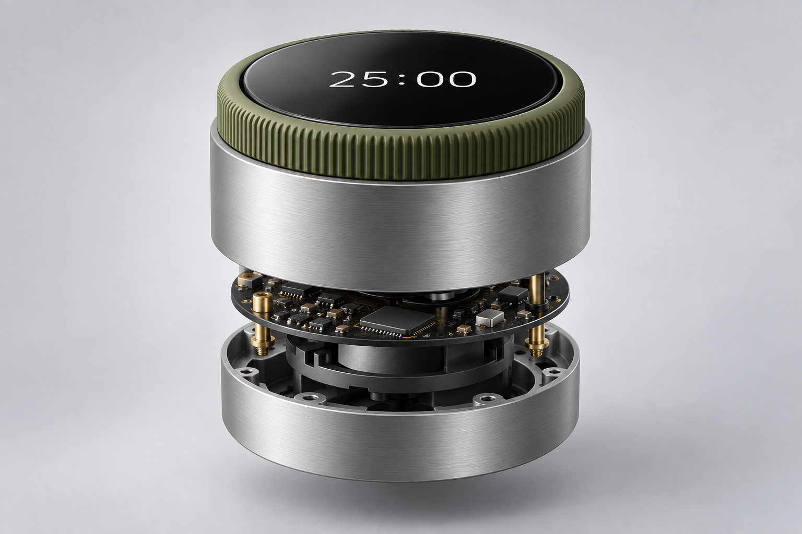

INTERACTION DESIGN / 2025
02Still
A gentle focus companion built around one task, one timer, and a fresh start.

A moment of focus.
The companion interface keeps one task in view. Try a session, pause, and pick it up when you’re ready.
still /
ONE THING AT A TIME
Your pace is the right pace.Make a little space.
25:00
A first draft, without distractions.
A moment to settle in.The question
Focus apps can turn concentration into another performance metric. Still removes scores and streaks so a session can begin without pressure.
The direction
A single task stays in view throughout the session. A clear pause state and adjustable duration give people control without filling the screen with settings.
What I learned
Calm is an interaction decision as much as a visual one. The prototype prioritizes a clear starting point and a forgiving pause.